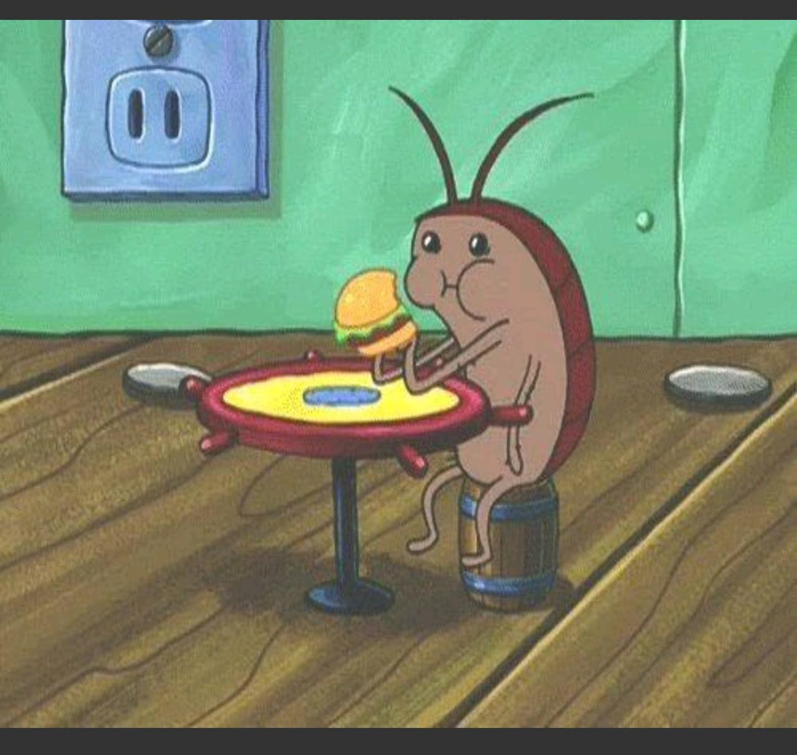
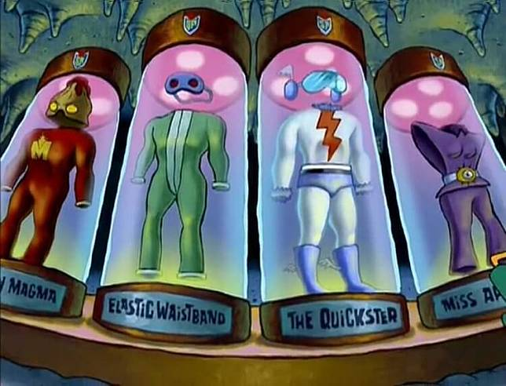

<!DOCTYPE html>
<html lang="en">

<head>
    <meta charset="UTF-8">
    <meta name="viewport" content="width=device-width, initial-scale=1.0">
    <title>Document</title>
    <link rel="stylesheet" href="./jQuery/lightbox/css/lightbox.css">
    <style>
        #container {
            margin: auto;
        }

        .box {
            width: 300px;
            margin-bottom: 5px;
        }

        .box img {
            width: 300px;
            vertical-align: bottom;
            /* 處理圖片下方預設的留白 */
        }
    </style>

    <script crossorigin src="https://unpkg.com/react@18/umd/react.development.js"></script>
    <script crossorigin src="https://unpkg.com/react-dom@18/umd/react-dom.development.js"></script>
    <script src="https://unpkg.com/@babel/standalone/babel.min.js"></script>
</head>

<body>
    <div id="root"></div>
    <script type="text/babel">
        // 查看react, reactDOM成員
        const { useEffect } = React;

        // jQuery環境簡寫


        // 步驟三：建立 React 元件
        // 元件自首要大寫，而且有回傳值return
        function App() {

            useEffect(() => {
                // 撰寫jQuery環境正常寫法
                // $(document).ready(function(){});
                $(function () {
                    $('#container').imagesLoaded(function () {
                        $('#container').masonry({
                            isFitWidth: true // 左右留白平均(水平置中)，必須搭配最外框的container
                        });
                    });
                });
            }, []);

            return (
                <div>
                    <h1>瀑布流</h1>
                    <div id="container">
                        <div class="box">
                            
                        </div>
                        <div class="box">
                            
                        </div>
                        <div class="box">
                            
                        </div>
                        <div class="box">
                            
                        </div>
                        <div class="box">
                            
                        </div>
                        <div class="box">
                            
                        </div>
                        <div class="box">
                            
                        </div>
                        <div class="box">
                            
                        </div>
                        <div class="box">
                            
                        </div>
                        <div class="box">
                            
                        </div>
                        <div class="box">
                            
                        </div>
                        <div class="box">
                            
                        </div>
                        <div class="box">
                            
                        </div>
                        <div class="box">
                            
                        </div>
                    </div>
                </div>
            )
        }

        // 步驟四：渲染元件到根元件上
        ReactDOM
            .createRoot(document.getElementById('root'))
            .render(<App />);

    </script>
    <!--  -->
    <script src="./jQuery/js/jquery-1.11.3.min.js"></script>
    <!-- 載入圖片主程式 -->
    <script src="./jQuery/js/imagesloaded.pkgd.min.js"></script>
    <!-- 瀑布流主程式 -->
    <script src="./jQuery/js/masonry.pkgd.min.js"></script>
</body>

</html>